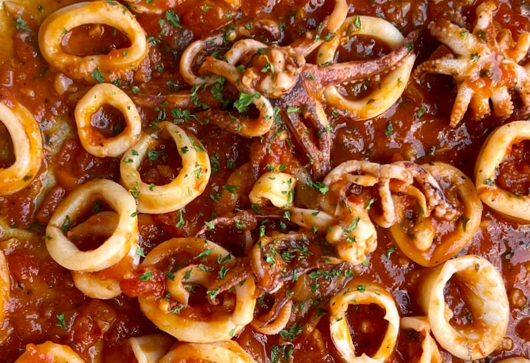

Sauteed Squid

Description
Sautéed squid is a simple yet flavorful seafood dish featuring tender
squid quickly cooked in a hot pan with olive oil, garlic, and aromatic
herbs. The high-heat sautéing method ensures a perfectly tender texture
while allowing the squid to soak up delicious flavors. Often finished with
a squeeze of fresh lemon juice and a sprinkle of chili flakes, this dish
is light, savory, and perfect as an appetizer or a main course served with
crusty bread or a fresh salad.
Ingredients
- 1 lb of cleaned squid, tubes and tentacles
- 3 tablespoons of extra virgin olive oil
- 3 garlic cloves, minced
- 2 teaspoons fresh parsley, chopped
- ½ teaspoon of dried Calabrian chili peppers
- 1 pint of tomato sauce
- Salt and pepper
Steps
- Clean and cut the calamari into rings about a half inch wide.
- In a large frying pan, add a couple tablespoons of olive oil.
-
Put the pan on medium high heat and add your chopped garlic and the
dried Calabrian chili pepper flakes. Allow the garlic and Calabrian
chili peppers to heat up slowly and flavor the oil. If the garlic is
starting to cook too fast, turn the stove down to low heat to prevent it
from burning. This should take 2-3 minutes.
-
Pat your raw calamari with a paper towel to remove any excess moisture.
Now add your raw calamari to the pan. Make sure you put in the calamari
rings and tentacles.
- Season the calamari with salt and black pepper.
-
With the pan on medium heat, keep the calamari moving by tossing the pan
or stirring it with a wooden spoon for about 2 minutes.
-
When the calamari starts to become firm and develop a sear on the
outside, add the tomato sauce and parsley. Let the squid simmer in the
tomato sauce for another 3-4 minutes on medium high heat.
-
Taste the calamari during the process and put in some additional salt if
needed.
- Adjust the heat by adding more dried chili peppers if needed.
- Transfer the cooked squid and sauce to a plate and enjoy!
Home